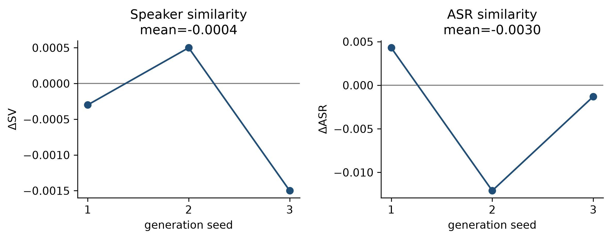
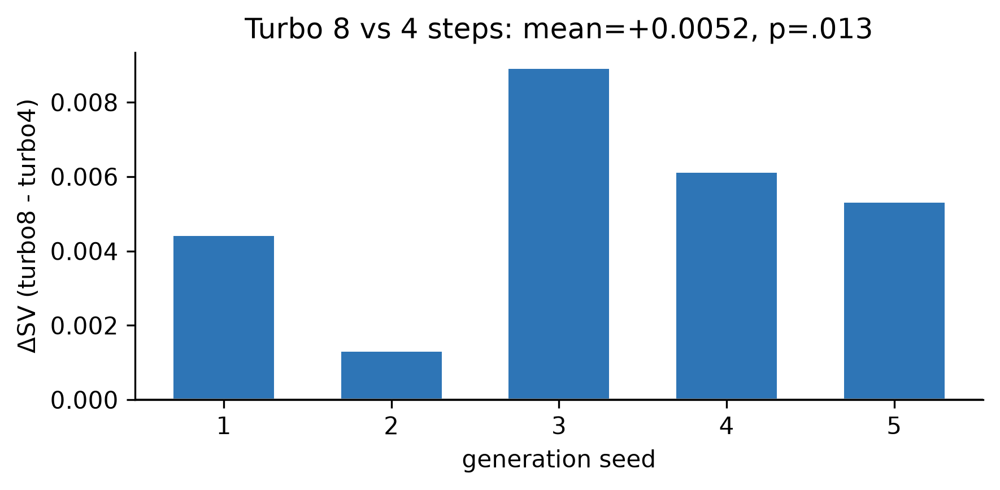
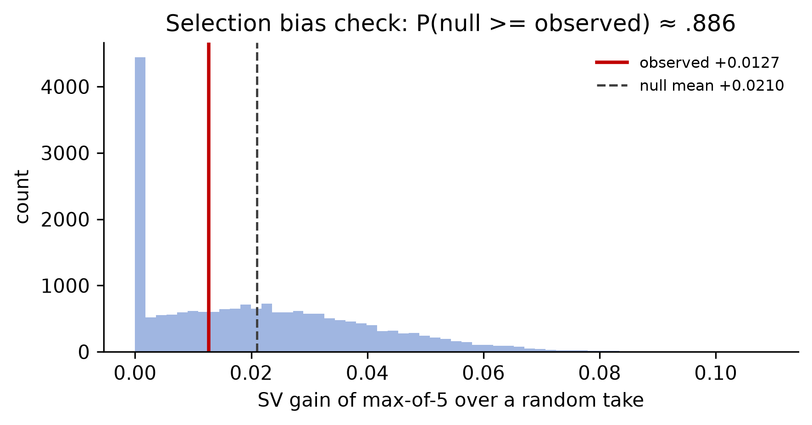

声音 C 实验论文 v1.0
2026-11-20
基于 GPT-SoVITS V5（2026-10-06 本地包）的离线实验记录
本文记录了一次以“让 GPT-SoVITS V5 微调后的声音 C 比零样本更像目标角色 Kan”为目标的完整实验。范围从微调实验开始；游戏解包、文本对齐等前置工作不在本文范围。数据为 1,200 句单说话人日文语音，硬件为 6 GB 显存，底模为 V5dev。我们尝试了标准 LoRA、干净子集、读出层、adaLN、全线性、官方风格 q/v、自蒸馏、后五层全参、ref_enc 条件侧、GPT s1 全参等路线；在 30 句配对测试上，没有任何微调显著超过零样本 v5dev。最接近的 vo16_s300 在 seed1–3 重测中 SV 差为 −0.0003 / +0.0005 / −0.0015，均值 −0.0004（t=−0.75），仍为零。
零训练侧，turbo 8 步相对 4 步有小的但可复现的提升：30 句 × 5 seeds，SV +0.0052（p=.013），ASR −0.0045（p=.135）。更有意义的是一个非模型改动：把分句从 cut0 改为 cut5，30 句 test、5 个 seed 的 SV 从 0.8811 提到 0.9041，ASR 基本不变（0.9203 → 0.9236）。该效应跨 seed 稳定，配对 bootstrap 的 SV 95% CI 为 +0.0097…+0.0309。
本文还记录了一次假阳性及撤回：best-of-5 选择一度显示 SV +0.0127，但独立审计发现这是 max-of-k 选择偏差（零假设 P≈0.886），第二个 ASR 也只 +0.0023；该方案不作为结果。我们保留这次错误，因为它比多数“成功”更有方法论价值。
关键词：GPT-SoVITS V5；零样本 TTS；LoRA；负结果；选择偏差；分句；声音克隆
零样本 TTS 的常见预期是：给定 5–10 秒参考音，模型就能复现目标音色；若再加入几十到几千句目标语音做微调，应当更稳、更像。GPT-SoVITS V5 是这一路线的代表之一，官方支持零样本与少样本微调。
我们最初也按这个预期工作：
结果与预期相反。微调没有带来稳定增益，甚至在多个设置中退步。进一步分析表明，这不是“训练不够久”或“rank 不够大”，而是 V5 的音色锚点、LoRA 的作用范围、训练/推理参考域错位和单说话人数据冗余共同造成的。
本文的贡献不是提出一个新模型，而是给出三条可复用的结论：
cut5 分句让 SV 提升约 0.023，ASR 不降；V5 的推理可以粗略分为：
文本 → s1 AR GPT（s1v3.ckpt）→ 语义 token
→ enc_p / quantizer（条件侧）
→ CFM DiT（扩散/流匹配）
→ HiFi-GAN 48 kHz
参考音通过 ref_enc 提供音色条件。训练时，CFM 的 prompt 和 ge 通常取自目标自身；推理时换成另一段参考，因此存在训练/推理的参考域差异。
module/models.py 的 WNEncoder.forward 与 Encoder.forward 中移除 g = g.detach()，使 ref_enc 可训练；models.py 中给 SynthesizerTrnV3.forward 增加 refer_spec，让外部参考的 704-bin 频谱进入 ref_enc；s2_train_v3_lora.py 中加入外部参考训练；data_module.py 做 num_workers=0 兼容；这些修改是实验性的，不代表官方实现。
这些指标都是代理指标，不能替代人耳；本文的最终判断仍需要听音。
s2Gv5dev.pth（32 步教师）、s2Gv5turbo.pth（4 步蒸馏）；数据规模是本实验的核心限制：单说话人、单风格、1,200 句，零样本参考已经覆盖了音色；微调能获得的新信息很少。
ref1_fem_kan_00003.wav（4.6 s），除非特别说明；| 路线 | 配置 | 目的 |
|---|---|---|
| 标准 LoRA | q/v/out，rank16，lr 5e-6，1,200 步 | 最小改动 |
| 干净子集 | 863 句，rank16，lr 5e-6 | 去噪声 |
| 读出层 | to_out.0，rank4，lr 1e-5 |
只改输出 |
| adaLN | attn_norm.linear，rank8，lr 5e-5 |
条件调制 |
| 全线性 | q/k/v/out + FFN，rank8 | 增大容量 |
| 官方风格 q/v | rank16，lr 2e-5，segment 20480 | 贴近官方 |
| 自蒸馏 | v5dev/ref1 生成 869 句，q/v rank16，lr 2e-5 | 扩数据 |
| 后五层全参 | block 17–21，lr 5e-7 / 5e-6 | 大容量 |
| ref_enc | 移除 detach、解冻，lr 5e-5 | 改音色条件 |
| GPT s1 | 77.6M，1 epoch | 改语义侧 |
30 句 test，seed1 的代表性结果：
| 版本 | SV ↑ | amp ↓ | CPP ↑ | ASR ↑ |
|---|---|---|---|---|
| turbo（4步） | 0.8796 | 0.2401 | 0.1791 | 0.9268 |
| v5dev（32步） | 0.8791 | 0.2469 | 0.1800 | 0.9195 |
| vo16_s300 | 0.8788 | 0.2460 | 0.1806 | 0.9175 |
| pair_s800 | 0.8789 | 0.2497 | 0.1800 | 0.9215 |
| clean_s700 | 0.8784 | 0.2434 | 0.1807 | 0.9175 |
| aug_s1200 | 0.8771 | 0.2511 | 0.1806 | 0.9055 |
vo16_s300 是最接近的微调：SV −0.0004（CI −0.0015…+0.0008）。为排除单 seed 偏差，我们用 seed1–3 重测：
| seed | v5dev SV | vo16 SV | ΔSV | v5dev ASR | vo16 ASR | ΔASR |
|---|---|---|---|---|---|---|
| 1 | 0.8818 | 0.8816 | −0.0003 | 0.9080 | 0.9123 | +0.0043 |
| 2 | 0.8758 | 0.8763 | +0.0005 | 0.9351 | 0.9230 | −0.0121 |
| 3 | 0.8744 | 0.8729 | −0.0015 | 0.9204 | 0.9191 | −0.0013 |
| mean | 0.8773 | 0.8769 | −0.0004 | 0.9212 | 0.9181 | −0.0030 |
seed 级检验：SV t=−0.73，p≈0.5；ASR t=−0.63，p≈0.6。多 seed 复测没有翻盘。

其他负结果：
30 句 × 5 seeds，seed 级配对：
| seed | ΔSV (8−4) | ΔASR |
|---|---|---|
| 1 | +0.0044 | 0.0000 |
| 2 | +0.0013 | −0.0104 |
| 3 | +0.0089 | −0.0027 |
| 4 | +0.0061 | +0.0007 |
| 5 | +0.0053 | −0.0103 |
| mean | +0.0052 | −0.0045 |
SV：t=4.25，df=4，p=.013；ASR：p=.135，不显著。val 10 句：turbo8 0.9026 > turbo10 0.9014 > turbo4 0.8987，10 步没有继续涨。seed1 val 0.9019 / ASR 0.940；CFG 0 最好（0.9019/0.940），0.5/1.0/1.3 都更低。

cut5 改变的是文本分句，不改变权重。30 句 test：
| seed | cut0 SV | cut5 SV | cut0 ASR | cut5 ASR |
|---|---|---|---|---|
| 1 | 0.8868 | 0.9062 | 0.9238 | 0.9188 |
| 2 | 0.8785 | 0.9042 | 0.9230 | 0.9230 |
| 3 | 0.8779 | 0.9060 | 0.9140 | 0.9210 |
| 4 | — | 0.9024 | — | 0.9330 |
| 5 | — | 0.9018 | — | 0.9220 |
| mean | 0.8811 | 0.9041 | 0.9203 | 0.9236 |
需要强调：cut5 的增益是在同一批 30 句 test 上测的，不是新的 5k 句泛化实验；它跨 seed 稳定，但句子集仍有限。
每句生成 seed1–5 五个 take，过滤 ASR < seed1−0.005 的 take，再取 SV − 0.002×amp 最大者。
30 句 test 表面结果：
| 版本 | SV | amp | ASR |
|---|---|---|---|
| seed1 | 0.8868 | 0.2170 | 0.9238 |
| best-of-5 | 0.8995 | 0.2371 | 0.9377 |
SV +0.0127，ASR +0.0139，一度看起来是“双赢”。
独立复核指出：

best-of-5 不作为最终方案，也不写“显著更强”。相关页面/脚本保留为探索记录。这个错误提醒我们：
V5 的音色主要由 ref_enc → ge 和冻结的 quantizer/enc_p 决定。LoRA 默认只改 CFM 的 to_q/to_v/to_out.0，它改变的是流匹配的注意力，不是音素到音色的映射。即使把 ref_enc 解冻，1,200 句也不足以让条件侧学会新的映射；我们的 ref_enc 实验反而让句子 5/7 崩。
训练时 CFM 的 prompt 和 ge 取自目标自身；推理时换成另一段参考。我们打了外部参考补丁，但没有足够数据让主干忽略这个差异。结果是：训练 loss 可以降，推理音色不一定更稳。
1,200 句只有 1,200 个唯一文本；3,600 行增强并没有增加文本多样性。aug 的“提升”主要来自 val 选点和候选池 z 分，不是泛化。
零样本 v5dev 在 30 句 test 的 SV 约 0.88；微调能补的空间本来就只有 0.01–0.02，而 seed/句子噪声就有这个量级。除非引入新风格、新口音、更多文本，否则微调的期望收益很低。
本仓库只包含论文、图表、统计脚本和配置说明；不包含音频、角色语音数据、模型权重，以避免版权与隐私问题。
v5_paper/
paper.md
README.md
figures/
fig1_v5_pipeline.png
fig2_finetune_seed_deltas.png
fig3_turbo8_vs_turbo4.png
fig4_cut5_vs_cut0.png
fig5_selection_bias.png
code/
make_figures.py
stats_finetune_retest.py
stats_cut5.py
关键配置：
s2Gv5turbo.pthvo16_s300 在 3 个 seed 上仍是 −0.0004。turbo8 + ref1 + seed1 + cut5；它仍需要用户听音验收。| 路线 | 结果 |
|---|---|
| 标准 LoRA | SV −0.0023，amp 降主要来自单句 s02 |
| 干净子集 | clean_s700 val 好，test 无显著差异 |
| 读出层 | 几乎不动 |
| adaLN | 5 个 checkpoint 输出完全相同 |
| 全线性 | val 0.8945 vs 0.8941，噪声级 |
| 官方 q/v | s400 0.8940 vs 0.8945；s1200 0.8842 |
| 自蒸馏 | s869 0.8823 vs 0.8935 |
| 后五层全参 | lr 5e-7 不变；5e-6 小幅退步 |
| 外部参考 | 无显著差异 |
| soup | 10% 0.79、50% 0.69、75% 0.52 |
| 波形集成 | 0.8638 / 0.913 |
| 加长参考 | 0.8897 / 0.8593 / 0.8814 |
| 后处理 EQ | 0.9011 / 0.9277，清晰度略降 |
| ref_enc | 0.8825 / 0.868，句子崩 |
| GPT s1 | 0.8701 / 0.931，漂移 |
当模型已经零样本覆盖了目标音色，微调最先学到的往往不是“更像”，而是“更自信地重复已知”。先检查锚点和数据信息量，再决定要不要训。
GPT-SoVITS-v5-20261006；本文的 V5 结构与推理链以其代码为准。